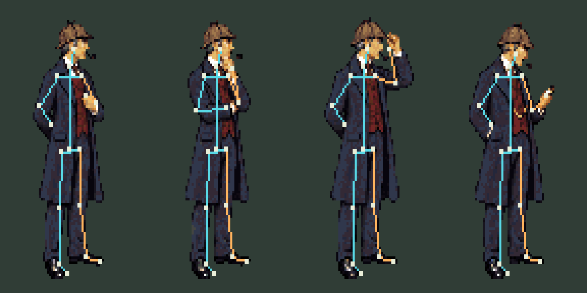
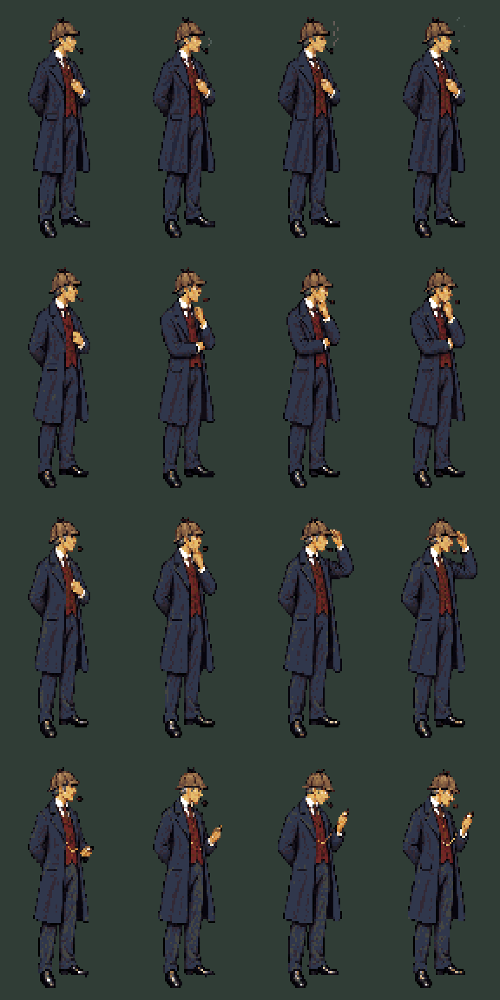
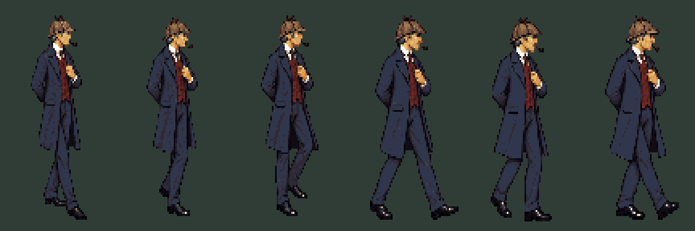
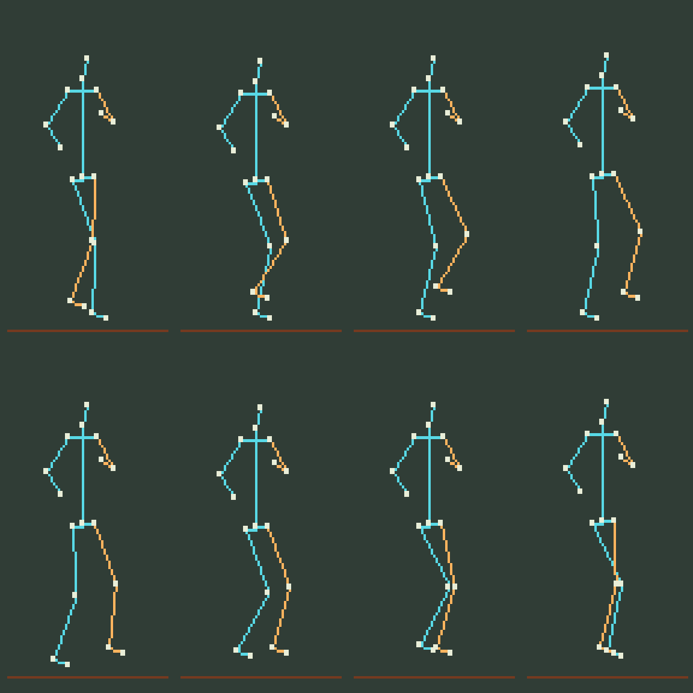
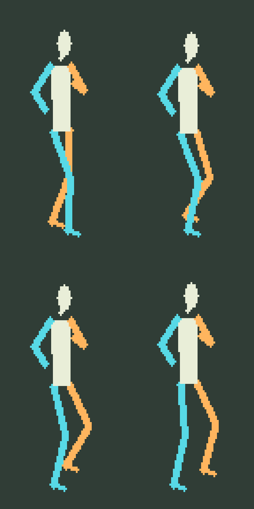
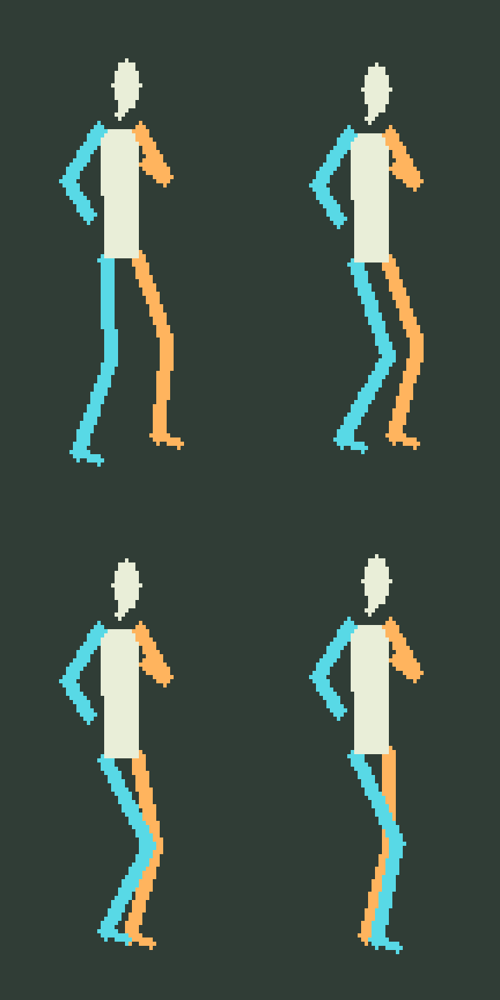

Complete figure animation from the approved costume poses. Select an action, pause, and step through it. The joint overlay is an artist’s estimate; joints hidden by clothing are inferred.
Near side: cyan · Far side: amber · Joint centres: ivory. The overlay is diagnostic artwork, excluded from game exports. Original palette and approximately 106-pixel figure height.
Shoulders, elbows, wrists, pelvis, hips, knees, ankles and toes. Hidden joints are estimates beneath the overcoat.
Pipe puff · Thinking · Cap adjustment · Watch inspection

Six walking cels; foot contact and stride remain under review.


The generator followed the leg alternation better when the same guide included limb thickness. Final motion is six cels; the planning study has eight.


Workflow and limitations · Editable frame annotations · Timing and registration · Asset manifest · Costume sources